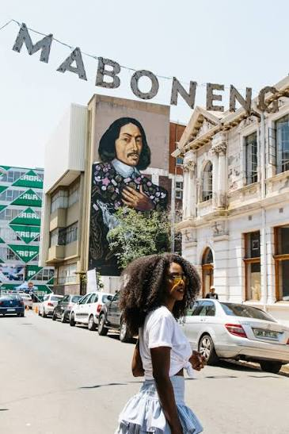
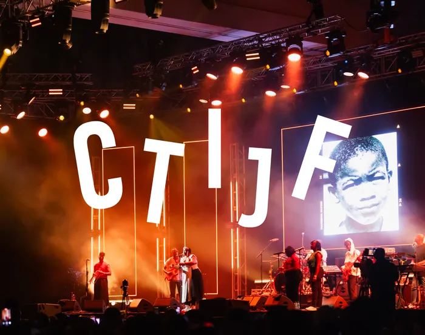
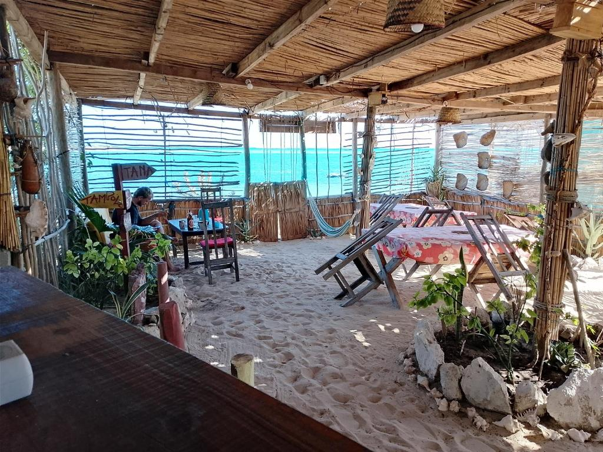
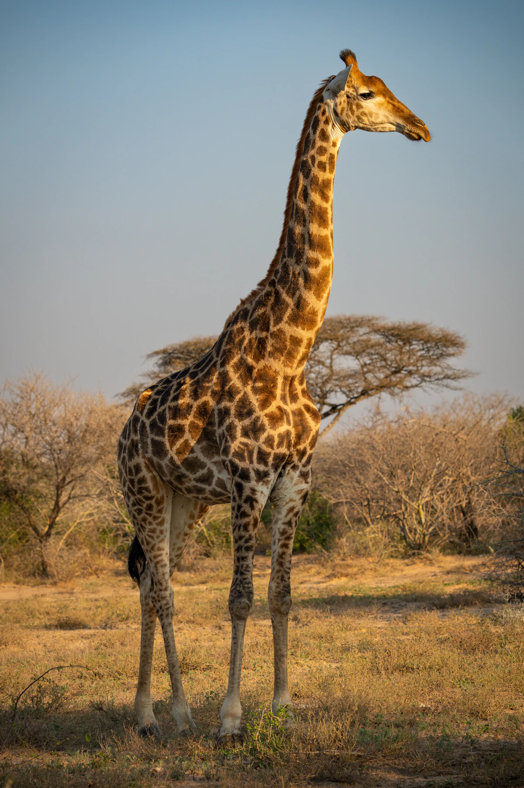
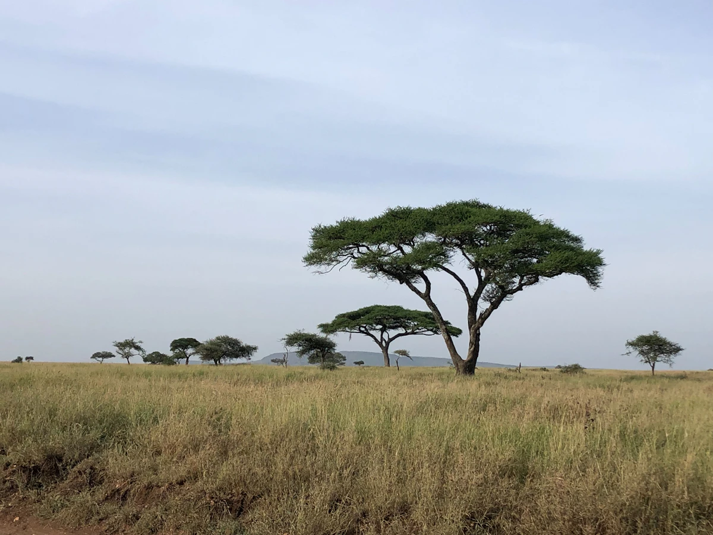
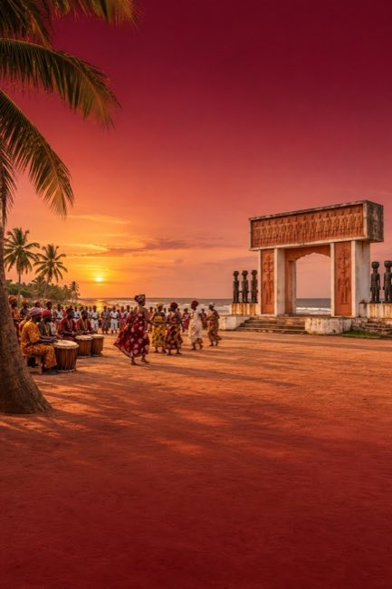

Entre
femmes.
Partager le voyage avec d'autres femmes, faire de nouvelles rencontres et créer des souvenirs qui continuent de vivre après le retour.
Sisi in Africa · par Made With Africa
Un voyage entre femmes pour partager, se reconnecter à soi et repartir inspirée.
Découvre l'univers Made With Africa, à l'origine des voyages Sisi in Africa.
Une expérience pensée pour nourrir les liens, les envies et l'inspiration, autant que la curiosité du voyage.
Partager le voyage avec d'autres femmes, faire de nouvelles rencontres et créer des souvenirs qui continuent de vivre après le retour.
Des ateliers pour faire le point sur tes objectifs, tes aspirations et ce que tu souhaites créer dans ta vie, quelle que soit ta situation aujourd'hui.
Échanger avec des femmes d'influence, découvrir leurs parcours et repartir avec de nouvelles idées et de l'élan.
Explorer la destination, ses cultures et ses bonnes adresses, en laissant aussi de la place au plaisir et à la légèreté.
De la ville au bush, de la musique à la mer : choisis le voyage qui te ressemble.
Itinéraires et programmes à confirmer.

Ville · Safari · Rencontres
Une ville vibrante à découvrir avec les femmes qui l'inspirent, puis une parenthèse safari pour changer de rythme.

Jazz festival en mars · autres départs
Quatre dates pour découvrir la ville ; le festival de jazz est envisagé pour le départ de mars uniquement.

Chez Lulu Beach
La mer, la pirogue et le temps de vivre. Chez Lulu, profiter d'un Madagascar authentique, loin de la foule.

Ukuthula Bush Lodge · Bien-être
Une parenthèse de déconnexion : bien-être, yoga, nature et découverte des animaux. Une pause pour ralentir et respirer.

En cours de préparation
Une nouvelle histoire se prépare. L'itinéraire et les rencontres seront partagés dès qu'ils seront prêts.

Ouidah · Vodun Days
Un voyage culturel autour des Vodun Days, des rencontres et de l’histoire de Ouidah. Séjour en préparation.
Aux femmes qui ont envie de découvrir une destination, de partager une expérience et de prendre un temps pour elles, quelle que soit leur situation actuelle.
Un temps pour réfléchir à tes objectifs, à tes aspirations et à ce que tu souhaites créer dans ta vie. Le contenu précis sera présenté avec le programme du voyage.
La maquette actuelle prévoit des groupes de 6 à 10 voyageuses.
La maquette actuelle présente le voyage hors billet d'avion. Les conditions définitives seront précisées avant la réservation.